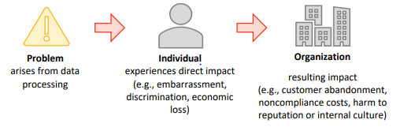

Security practitioners know that data security and data privacy
are related but there are also key differences. Think about an organizational
scenario where various layers of defense (e.g., restricted access control,
encryption of data at rest) have successfully secured user privacy data, but privacy
laws were still violated by collecting the privacy data without consent.
The best security is built into software and software
development operations at inception and monitored and controlled throughout the
organizational and software life cycle—simply put, software security cannot be an
afterthought. The same can be stated about privacy. Privacy considerations must be
included in software projects when identified, and data privacy requirements must be
identified early within the project life cycle.
Objectives
Identify privacy laws and regulations that aim to mitigate privacy risk.
Discuss data anonymization and enumerate various approaches for anonymization.
Explain user consent, data retention, and data disposition in the context of
privacy.
Recognize implications of cross-border data transfer and restrictions for the
transfer of personal data.
Overview
Privacy laws across the globe protect individuals against misuse
of their personal data. Businesses need to operate within the confines of these
laws. Anonymization can be used to remove the association between the data subject
and the identifying dataset. Most privacy laws and regulations require organizations
to address user consent and protection, retention, and secure disposition of
personal data.
Privacy Risk
Around the world, data protection and privacy laws and
regulations provide protection against misuse and disclosure of personally
identifiable information (PII), personal healthcare information, and individuals’
financial information. Unauthorized access, use, or disclosure of personal data can
adversely affect individuals and organizations, often to a severe degree. For an
organization, the adverse impact is typically in two areas: loss of public trust and
legal liability. This figure shows how problems during the processing of privacy
data can adversely affect individuals, and in turn have a detrimental impact on the
organization that processed the privacy data.

Figure 6: Relationship Between Privacy Risk and
Organizational Risk16
Privacy Laws and Regulations
Various laws and regulations govern how organizations may
collect, store, share, or disclose individuals’ private data. A few such laws and
regulations from around the globe are presented in this section.
California Consumer Privacy Act
(CCPA)
The California Consumer Privacy Act (CCPA) is a landmark piece
of data privacy legislation. Enacted in 2018 and enforceable as of July 1, 2020, it
secures new privacy rights for California consumers relating to the access,
deletion, and sharing of personal information. CCPA’s obligations apply to
businesses that meet certain criteria regarding size, location, and type of
goods/services provided.
European Union (EU) Privacy Laws
In the European Union (EU), the Directive on Data Protection was
established in 1995 and regulated the processing and storage of personal data. The
General Data Protection Regulation (GDPR), adopted in 2016 and enforceable as of
2018, has superseded this. The GDPR is intended to strengthen and unify data
protection for all individuals within the EU. It also addresses the export of
personal data outside the EU.
Canadian Privacy Laws
In Canada, the Privacy Act applies to the government sector. It
requires that any PII that a government organization collects must be directly
related to a program or activity of the institution.
Canada’s Personal Information Protection and Electronic
Documents Act (PIPEDA) applies to the private sector and specifies that an
organization may only collect, use, or disclose personal information for purposes
that a reasonable person would consider appropriate under the circumstances.
The main privacy law in Australia is the Australian Federal
Privacy Act, which defines principles pertaining to the collection, use, disclosure
and storage of personal information, as well as data quality, data security,
openness, access and correction, identifiers, anonymity, transborder data flows, and
sensitive information that apply to private organizations and health services
providers.
Organization for Economic Cooperation
and Development (OECD)
The Organization for Economic Cooperation and Development (OECD)
is an intergovernmental economic organization. Beginning as early as 1980 and with a
significant update in 2007, the OECD established a set of principles to protect
privacy rights of individuals within member states:
Member states limit their collection of personal data.
The collection of personal data should be obtained by lawful and fair means.
The collection of personal data should be done with the knowledge or consent of
the data subject.
Personal data should be relevant to the purposes for which it is to be used.
Personal data needs to be accurate, complete, and up to date.
The purposes for which personal data is collected should be specified at the
time of data collection.
Personal data should not be disclosed, made available, or otherwise used for
purposes other than those specified.
Personal data should be protected by reasonable security safeguards.
Cybersecurity and Privacy Risk
While managing cybersecurity risk contributes to managing
privacy risk, it is not sufficient, as privacy risks can also arise by means
unrelated to cybersecurity incidents.17
17 Ibid.
Safeguarding Personally Identifiable
Information (PII)
Privacy requirements must be considered wherever PII relating to
a person or persons is collected and stored.
According to NIST, personally identifiable information can be
used to trace an individual’s identity (e.g., name, social security number,
biometric records), either “alone, or when combined with other personal or
identifying information...linked or linkable to a specific individual.”
NIST also notes that “Sensitive PII...if lost, compromised, or
disclosed without authorization, could result in harm, embarrassment, inconvenience,
or unfairness to an individual.”
It lays out the following types of sensitive PII:
Social Security Number (including truncated form)
Place of birth
Date of birth
Mother’s maiden name
Biometric information
Medical information (excluding brief references to absences from work)
Personal financial information
Credit card or purchase card account numbers
Passport numbers
Employment information (e.g., performance ratings, disciplinary actions, and
results of background investigations)
Criminal history
Any other information that may stigmatize or adversely affect an individual
“Context of information is important,” NIST warns. “For example,
a list of names and phone numbers for the department’s softball roster is very
different from a list of names and phone numbers for individuals being treated for
an infectious disease. If sensitive PII is electronically transmitted, it must be
protected by secure methodologies, such as encryption, Public Key Infrastructure, or
secure sockets layer. When in doubt, treat PII as sensitive.”18
Data Protection Impact
Assessments
GDPR requires a data protection impact assessment (DPIA) for all
projects involving a high risk to personal information.
“Where a type of processing in
particular using new technologies, and taking into account the nature, scope,
context and purposes of the processing, is likely to result in a high risk to the
rights and freedoms of natural persons, the controller shall, prior to the
processing, carry out an assessment of the impact of the envisaged processing
operations on the protection of personal data,” states GDPR.eu’s Data Protection
Impact Assessment.19
Failing to protect personal
information collected on clients or website visitors can result in severe penalties.
As stated previously, protection of PII is like protection of
other types of sensitive data in many ways. Data must be protected against
unauthorized disclosure, alteration, and destruction. Most safeguards used for
protection of other sensitive data types may still be applicable to the protection
of PII.
Anonymized information is defined as previously identifiable
information that has been de-identified and for which a code or other association
for re-identification no longer exists.20
For example, in the case of medical data, the anonymized data
refers to that from which the patient cannot be identified by the recipient of the
information. The name, address, and full post code would be removed, together with
any other information which, in conjunction with other data held by or disclosed to
the recipient, could identify the patient.
De-anonymization is the reverse process, in which anonymous data
is cross-referenced with other data sources to re-identify the anonymous data
source.
Various techniques and approaches for data anonymizationhave been suggested. They include:
Generalization. Replacing specific information (e.g, full birthday)
with something less specific (e.g, year of birth only).
Perturbation. Making random changes to the data.
Anonymized data doesn’t necessarily ensure 100% privacy because
an attacker could infer PII using information contained in a different data set and
linking it to the anonymized data set.
Ultimately the organization must determine which method(s) can
help it achieve its anonymization objectives. Software development teams need to
understand the ramifications of privacy data in databases that are accessed and
operated on by applications. They also need to understand the ramifications of using
production data in nonproduction environments.
Obtaining user consent is a process for getting permission from
an individual before collecting, using, or monitoring privacy information connected
to that individual. The individual can only consent if they understand the purpose,
facts, implications, and consequences of collecting the information.
To give user consent, the individual needs to know:
What data is being collected?
Why is it being collected?
How is it being collected?
How long will it be used?
How will it be protected?
Additionally, if the individual’s information is collected and
monitored using software, then that software must have the capability to provide an
adequate level of protection for private information.
As an example of consent, ISO/IEC 27018:2019 requires cloud
service providers (CSPs) that adopt this international standard to operate under
five key principles. The “Consent Principle” of this ISO standard suggests that CSPs
must not use personal data they receive for advertising and marketing unless
expressly instructed to do so by the customer.
With respect to consent, must also be understood. As
an example, consider that in some states the recording of phone conversations may
require the consent of just one party whereas in other states the consent of all
parties involved would be needed.
Disposition
As stated earlier, a key part of data protection procedures is
the secure disposal of data once it is no longer needed. The following are some
examples of mandates for proper and secure data disposition.
Federal Trade Commission (FTC)—Disposal of Consumer Report Information and
Records. This rule requires businesses and individuals that maintain or
otherwise possess consumer reports and records for a business purpose to take
appropriate measures to dispose of sensitive information derived from such
consumer reports and records.
HIPAA Security Rule. This rule “requires that covered entities
implement policies and procedures to address the final disposition of electronic
PHI and/or the hardware or electronic media on which it is stored, as well as to
implement procedures for removal of electronic PHI from electronic media before
the media are made available for re-use.”21
Personal Information Protection and Electronic Documents Act (PIPEDA).
According to PIPEDA, “Personal information that is no longer required to
fulfil the identified purposes should be destroyed, erased, or made anonymous.
Organizations shall develop guidelines and implement procedures to govern the
destruction of personal information.”22
California Consumer Privacy Act (CCPA). This act gives California
consumers “the right to delete personal information held by businesses and by
extension, a business’s service provider.”23
23 State of California Department of Justice;
California Consumer Privacy Act of 2018 (CCPA); https://oag.ca.gov/privacy/ccpa; retrieved June 2023.
Right to be Forgotten
Article 17 of the General Data Protection Requirement (GDPR) is
titled “Right to erasure” (also called “right to be forgotten”).
It states that:
“The data subject shall have the right to obtain from the
controller the erasure of personal data concerning him or her without undue delay
and the controller shall have the obligation to erase personal data without undue
delay where one of the following grounds applies:
the personal data are no longer necessary in relation to the purposes for which
they were collected or otherwise processed;
the data subject withdraws consent on which the processing is based according to
point (a) of Article 6(1), or point (a) of Article 9(2), and where there is no
other legal ground for the processing;
the data subject objects to the processing pursuant to Article 21(1) and there
are no overriding legitimate grounds for the processing, or the data subject
objects to the processing pursuant to Article 21(2);
the personal data have been unlawfully processed;
the personal data must be erased for compliance with a legal obligation in Union
or Member State law to which the controller is subject;
the personal data have been collected in relation to the offer of information
society services referred to in Article 8(1).”24
Data Retention
Earlier, it was stated that a data retention policy will
establish the protocol for retaining information for operational or regulatory
compliance needs. Data minimization and storage limitation required by various laws
and regulations from around the world (e.g., GDPR) will require organizations to
clearly define their retention periods with respect to personal data.
Many laws and regulations restrict or do not allow personal data
to be transferred across borders or to locations where the privacy level or data
protection is deemed to be weaker than necessary and required. Risks of crossborder
data transfer are highlighted and reflected in the rules and requirements expressed
in various laws and regulations across the globe. Examples include:
Privacy Shield. The EU-U.S. and Swiss-U.S. Privacy Shield Frameworks
were designed by the U.S. Department of Commerce and the European Commission and
Swiss Administration, respectively, to provide companies on both sides of the
Atlantic with a mechanism to comply with data protection requirements when
transferring personal data from the European Union and Switzerland to the United
States in support of transatlantic commerce.
General Data Protection Regulation (GDPR). The GDPR imposes conditions
and requirements that should be met with respect to the transfer of EU citizens’
personal data outside of the European Union.
Asia-Pacific Economic Cooperation (APEC) Privacy Framework. The APEC
Privacy Framework requires the implementation of the APEC Cross-Border Privacy
Rules (CBPR) system. The CBPR system balances the flow of information and data
across borders with the requirements for effective protection for personal
information.
Australia Privacy Principles (APPs) and New Zealand Information Privacy
Principles (NZ IPPs). These principles make it extremely difficult for
enterprises to move sensitive information to cloud service providers that store
data outside of the borders of Australia or New Zealand.
Data Residency, Jurisdiction, and
Multinational Data Processing
Privacy laws and regulations from around the world may place
restrictions on where their citizens’ personal data may be collected, processed, or
stored. Organizations need to clearly understand and comply with relevant data
residency requirements, regardless of whether the data is hosted on-premises or in
the cloud. The locality of data where the processing and storage of data takes place
may have ramifications.
Jurisdictionalvariances become evident during
cases involving cross-border data requests or cases of contention. Even between
states in the same country there can be differences in data privacy. For example,
many U.S. states have created their own security breach disclosure laws, and the
details of these laws vary from state to state.
As user privacy and data rights mature, the jurisdictional
landscape is expected to remain volatile when organizations are international and
deal with users and data located in multiple geographic locations.
Privacy Requirements (3.4)
Security practitioners know that data security and data privacy are related but there are also key differences. Think about an organizational scenario where various layers of defense (e.g., restricted access control, encryption of data at rest) have successfully secured user privacy data, but privacy laws were still violated by collecting the privacy data without consent.
The best security is built into software and software development operations at inception and monitored and controlled throughout the organizational and software life cycle—simply put, software security cannot be an afterthought. The same can be stated about privacy. Privacy considerations must be included in software projects when identified, and data privacy requirements must be identified early within the project life cycle.
Objectives
Overview
Privacy laws across the globe protect individuals against misuse of their personal data. Businesses need to operate within the confines of these laws. Anonymization can be used to remove the association between the data subject and the identifying dataset. Most privacy laws and regulations require organizations to address user consent and protection, retention, and secure disposition of personal data.
Privacy Risk
Around the world, data protection and privacy laws and regulations provide protection against misuse and disclosure of personally identifiable information (PII), personal healthcare information, and individuals’ financial information. Unauthorized access, use, or disclosure of personal data can adversely affect individuals and organizations, often to a severe degree. For an organization, the adverse impact is typically in two areas: loss of public trust and legal liability. This figure shows how problems during the processing of privacy data can adversely affect individuals, and in turn have a detrimental impact on the organization that processed the privacy data.
Figure 6: Relationship Between Privacy Risk and Organizational Risk16
Privacy Laws and Regulations
Various laws and regulations govern how organizations may collect, store, share, or disclose individuals’ private data. A few such laws and regulations from around the globe are presented in this section.
California Consumer Privacy Act (CCPA)
The California Consumer Privacy Act (CCPA) is a landmark piece of data privacy legislation. Enacted in 2018 and enforceable as of July 1, 2020, it secures new privacy rights for California consumers relating to the access, deletion, and sharing of personal information. CCPA’s obligations apply to businesses that meet certain criteria regarding size, location, and type of goods/services provided.
European Union (EU) Privacy Laws
In the European Union (EU), the Directive on Data Protection was established in 1995 and regulated the processing and storage of personal data. The General Data Protection Regulation (GDPR), adopted in 2016 and enforceable as of 2018, has superseded this. The GDPR is intended to strengthen and unify data protection for all individuals within the EU. It also addresses the export of personal data outside the EU.
Canadian Privacy Laws
In Canada, the Privacy Act applies to the government sector. It requires that any PII that a government organization collects must be directly related to a program or activity of the institution.
Canada’s Personal Information Protection and Electronic Documents Act (PIPEDA) applies to the private sector and specifies that an organization may only collect, use, or disclose personal information for purposes that a reasonable person would consider appropriate under the circumstances.
16 National Institute for Standards and Technology; NIST Privacy Framework—A Tool for Improving Privacy Through Enterprise Risk Management; 2020; https://www.nist.gov/system/files/documents/2020/01/16/NIST%20Privacy%20Framework_V1.0.pdf; retrieved June 2023.
Australian Privacy Law
The main privacy law in Australia is the Australian Federal Privacy Act, which defines principles pertaining to the collection, use, disclosure and storage of personal information, as well as data quality, data security, openness, access and correction, identifiers, anonymity, transborder data flows, and sensitive information that apply to private organizations and health services providers.
Organization for Economic Cooperation and Development (OECD)
The Organization for Economic Cooperation and Development (OECD) is an intergovernmental economic organization. Beginning as early as 1980 and with a significant update in 2007, the OECD established a set of principles to protect privacy rights of individuals within member states:
Cybersecurity and Privacy Risk
While managing cybersecurity risk contributes to managing privacy risk, it is not sufficient, as privacy risks can also arise by means unrelated to cybersecurity incidents.17
17 Ibid.
Safeguarding Personally Identifiable Information (PII)
Privacy requirements must be considered wherever PII relating to a person or persons is collected and stored.
According to NIST, personally identifiable information can be used to trace an individual’s identity (e.g., name, social security number, biometric records), either “alone, or when combined with other personal or identifying information...linked or linkable to a specific individual.”
NIST also notes that “Sensitive PII...if lost, compromised, or disclosed without authorization, could result in harm, embarrassment, inconvenience, or unfairness to an individual.”
It lays out the following types of sensitive PII:
“Context of information is important,” NIST warns. “For example, a list of names and phone numbers for the department’s softball roster is very different from a list of names and phone numbers for individuals being treated for an infectious disease. If sensitive PII is electronically transmitted, it must be protected by secure methodologies, such as encryption, Public Key Infrastructure, or secure sockets layer. When in doubt, treat PII as sensitive.”18
Data Protection Impact Assessments
GDPR requires a data protection impact assessment (DPIA) for all projects involving a high risk to personal information.
“Where a type of processing in particular using new technologies, and taking into account the nature, scope, context and purposes of the processing, is likely to result in a high risk to the rights and freedoms of natural persons, the controller shall, prior to the processing, carry out an assessment of the impact of the envisaged processing operations on the protection of personal data,” states GDPR.eu’s Data Protection Impact Assessment.19
Failing to protect personal information collected on clients or website visitors can result in severe penalties.
18 Office of Privacy and Open Government, U.S. Department of Commerce; Safeguarding Information; http://www.osec.doc.gov/opog/privacy/PII_BII.html; retrieved June 2023.
19 GDPR.eu; Data Protection Impact Assessment; https://gdpr.eu/data-protection-impact-assessment-template/; retrieved June 2023.
Data Anonymization
As stated previously, protection of PII is like protection of other types of sensitive data in many ways. Data must be protected against unauthorized disclosure, alteration, and destruction. Most safeguards used for protection of other sensitive data types may still be applicable to the protection of PII.
Anonymized information is defined as previously identifiable information that has been de-identified and for which a code or other association for re-identification no longer exists.20
For example, in the case of medical data, the anonymized data refers to that from which the patient cannot be identified by the recipient of the information. The name, address, and full post code would be removed, together with any other information which, in conjunction with other data held by or disclosed to the recipient, could identify the patient.
De-anonymization is the reverse process, in which anonymous data is cross-referenced with other data sources to re-identify the anonymous data source.
Various techniques and approaches for data anonymization have been suggested. They include:
Anonymized data doesn’t necessarily ensure 100% privacy because an attacker could infer PII using information contained in a different data set and linking it to the anonymized data set.
Ultimately the organization must determine which method(s) can help it achieve its anonymization objectives. Software development teams need to understand the ramifications of privacy data in databases that are accessed and operated on by applications. They also need to understand the ramifications of using production data in nonproduction environments.
20 National Institute for Standards and Technology; NIST SP800-122—Guide to Protecting the Confidentiality of Personally Identifiable Information (PII); https://nvlpubs.nist.gov/nistpubs/Legacy/SP/nistspecialpublication800-122.pdf; retrieved June 2023.
User Consent
Obtaining user consent is a process for getting permission from an individual before collecting, using, or monitoring privacy information connected to that individual. The individual can only consent if they understand the purpose, facts, implications, and consequences of collecting the information.
To give user consent, the individual needs to know:
Additionally, if the individual’s information is collected and monitored using software, then that software must have the capability to provide an adequate level of protection for private information.
As an example of consent, ISO/IEC 27018:2019 requires cloud service providers (CSPs) that adopt this international standard to operate under five key principles. The “Consent Principle” of this ISO standard suggests that CSPs must not use personal data they receive for advertising and marketing unless expressly instructed to do so by the customer.
With respect to consent, must also be understood. As an example, consider that in some states the recording of phone conversations may require the consent of just one party whereas in other states the consent of all parties involved would be needed.
Disposition
As stated earlier, a key part of data protection procedures is the secure disposal of data once it is no longer needed. The following are some examples of mandates for proper and secure data disposition.
21 U.S. Department of Health and Human Services; What do the HIPAA Privacy and Security Rules require of covered entities when they dispose of protected health information?; https://www.hhs.gov/hipaa/for-professionals/faq/575/what-does-hipaa-require-of-covered-entities-when-they-dispose-information/index.html; retrieved June 2023.
22 Office of the Privacy Commissioner of Canada; Personal Information Retention and Disposal: Principles and Best Practices; https://www.priv.gc.ca/en/privacy-topics/business-privacy/safeguards-and-breaches/safeguarding-personal-information/gd_rd_201406/; retrieved June 2023.
23 State of California Department of Justice; California Consumer Privacy Act of 2018 (CCPA); https://oag.ca.gov/privacy/ccpa; retrieved June 2023.
Right to be Forgotten
Article 17 of the General Data Protection Requirement (GDPR) is titled “Right to erasure” (also called “right to be forgotten”).
It states that:
“The data subject shall have the right to obtain from the controller the erasure of personal data concerning him or her without undue delay and the controller shall have the obligation to erase personal data without undue delay where one of the following grounds applies:
Data Retention
Earlier, it was stated that a data retention policy will establish the protocol for retaining information for operational or regulatory compliance needs. Data minimization and storage limitation required by various laws and regulations from around the world (e.g., GDPR) will require organizations to clearly define their retention periods with respect to personal data.
24 Official Journal of the European Union; CELEX:32016R0679; https://eur-lex.europa.eu/legal-content/EN/TXT/PDF/?uri=CELEX:32016R0679; retrieved June 2023.
Cross-Border Data Transfer
Many laws and regulations restrict or do not allow personal data to be transferred across borders or to locations where the privacy level or data protection is deemed to be weaker than necessary and required. Risks of crossborder data transfer are highlighted and reflected in the rules and requirements expressed in various laws and regulations across the globe. Examples include:
Data Residency, Jurisdiction, and Multinational Data Processing
Privacy laws and regulations from around the world may place restrictions on where their citizens’ personal data may be collected, processed, or stored. Organizations need to clearly understand and comply with relevant data residency requirements, regardless of whether the data is hosted on-premises or in the cloud. The locality of data where the processing and storage of data takes place may have ramifications.
Jurisdictional variances become evident during cases involving cross-border data requests or cases of contention. Even between states in the same country there can be differences in data privacy. For example, many U.S. states have created their own security breach disclosure laws, and the details of these laws vary from state to state.
As user privacy and data rights mature, the jurisdictional landscape is expected to remain volatile when organizations are international and deal with users and data located in multiple geographic locations.